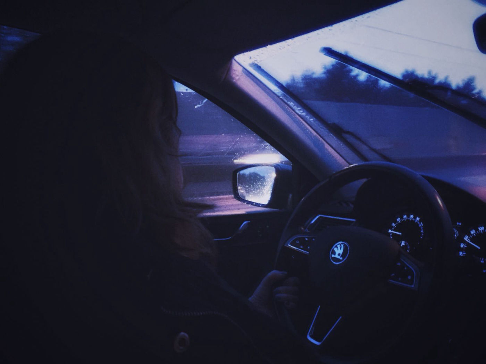
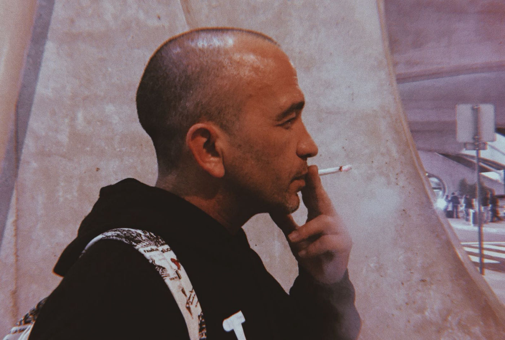
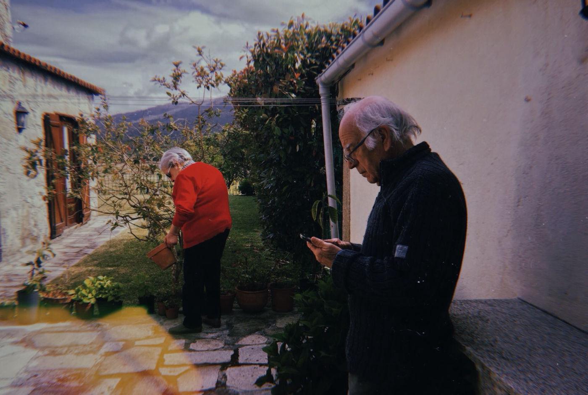
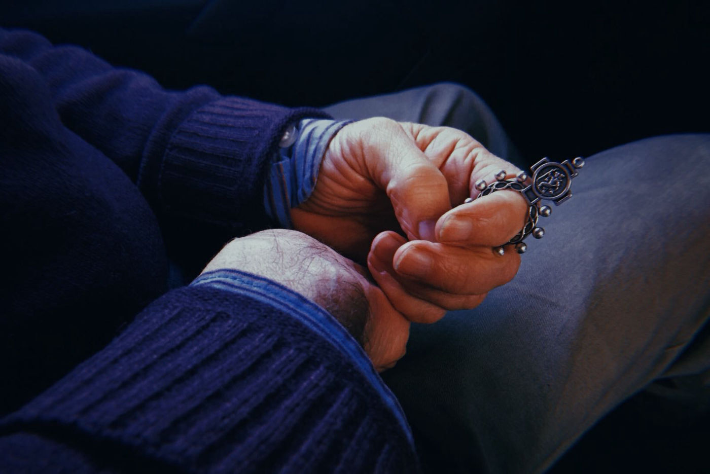

Portfólio by Maria Coelho
Biografia
Comunicação Gráfica
Fotografia
Contactos
open source web page maker

"My Safe Haven", Porto, 2018 (MEMORIES)

"Smoke & Lights", Porto, 2018 (MEMORIES)

"Time Out", Porto, 2018 (MEMORIES)

"Dezena", Porto, 2018 (MEMORIES)